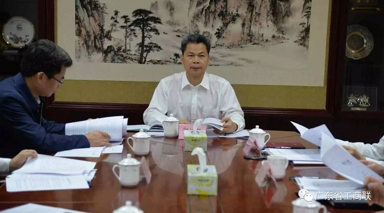
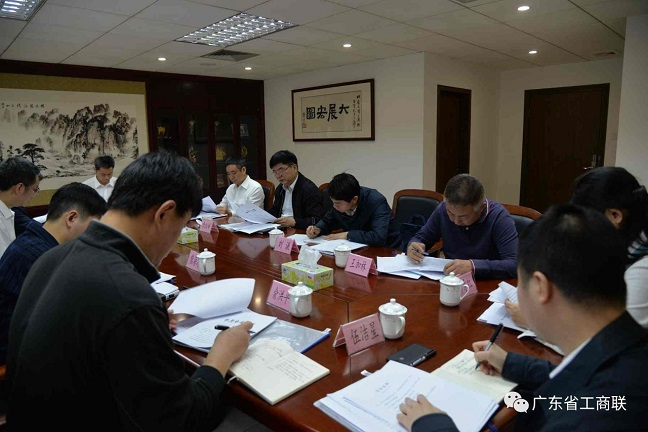

省非公经济组织党委召开全体委员会议 全面总结
3月30日，省非公有制经济组织党委召开全体委员会议，传达学习《中国共产党工作机关条例（试行）》和《省“两新”党工委2017年工作要点》文件精神，总结部署省非公经济组织党委工作。省非公经济组织党委书记、省委统战部副部长、省工商联党组书记郭汉毅主持会议并讲话。

郭汉毅指出，《中国共产党工作机关条例（试行）》（以下简称《条例》）是规范党的工作机关设立、职责和运行的基础主干党内法规，是加强党的组织制度建设的又一重要成果，对于夯实党的执政治国的组织制度基础，推进国家治理体系和治理能力现代化，提高党的领导水平和执政水平具有重要意义。他强调，省非公经济组织党委作为省“两新”组织党工委的派出机构，负责非公经济领域党建工作，要按照《条例》的要求，进一步完善制度，规范管理，切实履行好党委的职责，充分发挥作用；要认真贯彻落实今年省“两新”组织党工委提出的工作要点，明确目标任务，加强对地方工作的统筹指导；各委员单位、党委委员要落实抓党建责任要求，加强工作交流，运用好信息交流平台，密切合作，提高工作实效，共同努力推动实现各项年度目标。
郭汉毅在总结省非公经济组织党委工作时指出，2016年，在省委和省“两新”组织党工委领导下，在党委班子成员和各委员单位以及各地的大力支持下，省非公经济组织党委切实履行工作职责，紧紧围绕中央、省委和省“两新”工委的工作部署，组织制定年度工作计划，召开党委会议和全省民营企业党建工作座谈会，落实全面从严治党要求，加强非公经济组织党建工作，为促进非公经济发展和非公经济人士健康成长提供有力的组织保障。他指出，全省非公经济组织党的建设与中央和省委“全面从严治党”的要求仍存在较大差距，在工作实践中还存在不少问题和困难，必须坚持问题导向，加大力度，补齐短板，推动非公经济领域党建工作再上新台阶。
郭汉毅要求，2017年全省非公经济组织党建工作，要按照省“两新”组织党工委的工作部署，抓好抓实五项重点工作，为促进非公经济组织健康发展和非公经济人士健康成长，为实现我省“三个定位、两个率先”目标，以优异成绩迎接党的十九大和省第十二次党代会的胜利召开。一要抓好思想政治教育，深入开展六中全会精神学习培训，深化“两学一做”学习教育效果。二要提高“两个覆盖”水平，着力扩大覆盖面与提升覆盖质量。三要推进党建重点任务落实。提升园区非公企业党建工作水平，加强以互联网企业为代表的新领域党建，积极指导非公企业驻国（境）外单位党建，加强“小个专”党建工作，进一步加强商协会党建工作。四要加强“三支队伍”建设，抓好出资人这个关键，选优配强党组织书记和专职副书记；要加强专兼职党建指导员队伍建设。五要加强自身建设。加强对直属和重点联系党组织的工作指导，配强非公党建工作力量，加强思想宣传阵地建设，完善调研督查工作机制。

会议还审议通过《中共广东省非公经济组织委员会2017年工作要点》。省委第六巡视组副组长龚嘉明、省委第六巡视组组员刘谦到会指导。省非公经济组织党委副书记、省中小企业局副局长何佐贤，省非公经济组织党委副书记、省工商联秘书长李汉峰，省非公经济组织党委委员、省委统战部经济处处长陈继山，省商务厅机关党委专职副书记、党办主任熊海涛，省非公经济组织党委委员、省工商联机关党委专职副书记、党办主任俞洪平，省非公经济组织党委委员、省个体私营企业党委副书记王加林，省经济和信息化委员会民营经济处副处长邓承红参加会议。